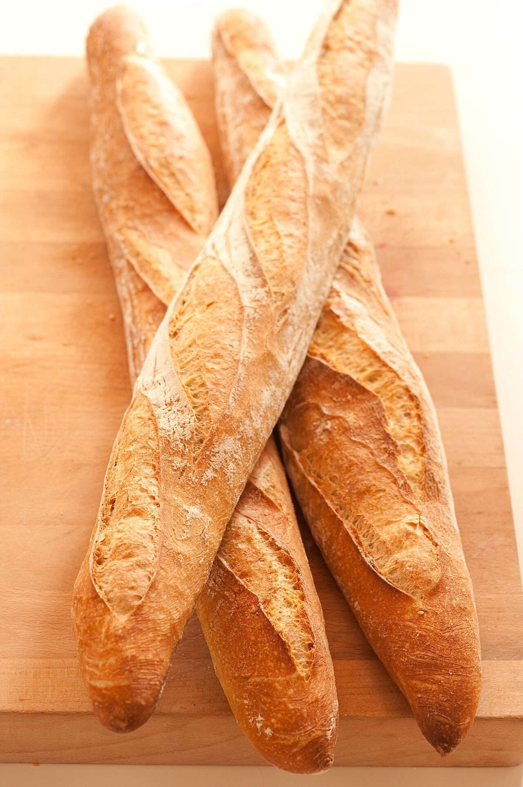

写真はイメージです
粉から焼き上がりまで、写真で順にたどる
一般的なパンづくりの流れを、イメージ写真で並べました。お店の実際の工程ではありません。
- 01 粉

粉の写真イメージ
- 02 生地

生地をこねる手元の写真イメージ
- 03 火

オーブンの炎の写真イメージ
- 04 焼き上がり

丸いパンの写真イメージ
ご来店前の確認
| 住所 | 兵庫県加古川市別府町別府1055-3 |
|---|---|
| 電話 | 079-437-8080 |
| 営業時間 | 準備中(お問い合わせください) |
| 定休日 | 準備中(お問い合わせください) |
| 駐車場 | 準備中(お問い合わせください) |
| お支払い | 準備中(お問い合わせください) |
最新の情報はInstagramで
Instagramを開く アクセスはこちら →
アクセスはこちら →